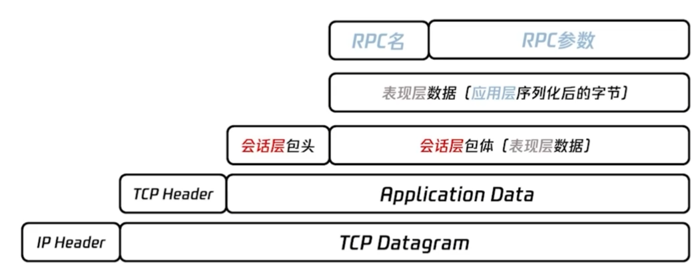
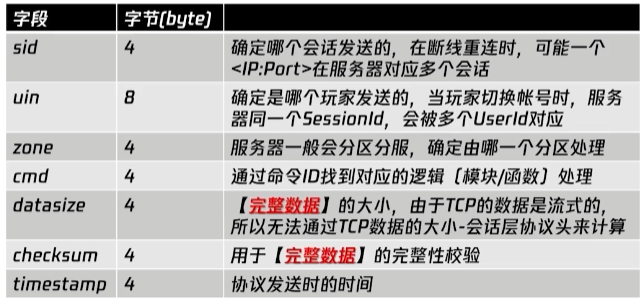

UE Basics
0. 源码编译及打包
- https://dev.epicgames.com/documentation/zh-cn/unreal-engine/downloading-source-code-in-unreal-engine
- https://dev.epicgames.com/documentation/zh-cn/unreal-engine/packaging-your-project#packaging-settings
1. UE 中的 UI 实现
(1) Slate UI
-
UE 底层的 UI 框架，是 UE 中所有 UI 的基础，强大而复杂。
-
Tools - debug - widget reflector (控件反射器)，可以选择任意 UI 控件并查看其层级和源代码（选中后按 ESC 锁定）。
(2) UMG (Unreal Motion Graphics) 控件蓝图
- 基于 Slate UI 构建的可视化 UI 工具，和其他蓝图创建方式相同（命名为
_UIBP） - 创建 C++ 类继承 UserWidget 绑定 UMG 控件
- 创建 HUD 类并在 Game Mode 里设置 HUD 为刚刚创建的 HUD 类以展示 UI
2. 游戏物理基础
(1) 碰撞检测与场景管理
- 碰撞体的选择（球体/圆柱体/mesh）：效率与准确
- 碰撞检测算法：带旋转的 box（把 OBB 旋转与坐标轴平行变成 AABB），GJK distance algorithm（不适用于凹形物体，需要把凹形物体分割为多个凸性再使用）
- 场景管理：BSP（二叉树基于平面划分，静态）、BVH（基于包围盒划分层级树 Hierarchy，可动态管理）、KDT（静态）、八叉树（动态，大范围查询快小范围查询慢）、均匀网格/稀疏网格（动态，稀疏网格用于物体分布不均匀的情况，小范围查询快大范围查询慢）、
(2) 刚体物理学
- 假设物体不会发生任何形变
- 线性速度（牛顿第二定律）、角速度（力矩）
- （角 Angular）阻尼（drag）
- 关节（joint）（fixed/spring/hinge）、布娃娃（ragdoll，模拟受力后自然运动，为骨骼添加碰撞体并用关节连接碰撞体，如受击、跌倒后由动画系统切换为布娃娃系统）
- 连续碰撞检测（CCD）解决高速物体移动穿透（在两个物理帧之间的碰撞检测），普通的离散型碰撞检测在高速移动物体上可能会失效
- Sweep-based CCD：将物体在每个物理帧内的运动轨迹视为一段连续的体积并检测该物体是否与其他物体发生碰撞。根据线性运动估算碰撞时间，由于未考虑角运动所以旋转的刚体仍可能出现穿插的问题。
- Speculative CCD：预测物体在下一个物理帧中的位置进行碰撞检测。根据线性和角运动计算出物体移动的包围盒，找出所有接触点再进行解算，但可能导致幽灵碰撞，因为这个方法是基于最近点算法采集所有可能的接触点，所以接触法线精度较低。适用于大部分场景（效率和准确平衡）。
- 载具系统
- Unity：wheelcollider
(3) 破坏系统
- 物体破坏原理
- offline：预先将物体分成多个碎片（模型制作/程序剖分）
- online：计算每个碎块受到的撞击力，更新碎块位置，碎块与场景交互
- 模型剖分算法：Voronoi 空间划分、BSP 二叉划分
- 《战地》：点云、雕刻球、收缩雕刻球、两次雕刻球之间的位置放置碎砖
(4) 柔体仿真
- 布料（基于骨骼，高效但不支持自碰撞检测/基于网格，对顶点进行物理计算，性能差）、毛发、吊坠
3. 游戏渲染
GPU
-
GPU 架构与管线设计
- 多处理核心少调度核心（SIMD）
- GPU 架构
- See 渲染架构比较：IMR、TBR & TBDR https://zhuanlan.zhihu.com/p/390625258
- PC 端：IMR（Immediate Mode Rendering, 直接绘制模式），这种模式适合延迟渲染。
- 移动端：TBR（Tile-Based Rendering）绘制模式，这种模式适合前向渲染（带宽消耗小）。
-
重心坐标的推导：假设 P 为三角形所处平面上一点，AP 为由 A 到 P 的向量。
如果某个坐标为负则点在三角形外。
-
投影矩阵的推导
- See https://www.songho.ca/opengl/gl_projectionmatrix.html
- 正交透视：将一个长方体先平移再缩放成(-1,-1,-1)到(1,1,1)范围内的正方体（）
-
光栅化遍历三角形内部像素有两种方法：逐像素遍历（重心坐标判断是否在三角形内部）、扫描线算法（计算起点终点）。其中扫描线算法是 GPU
的实现方法。 -
渲染硬件层接口（Render Hardware Interface, RHI）
- 跨平台：OpenGL、vulkan
- 平台独享：DirectX、metal
光
- 点光源使用距离的平方进行衰减，为防止距离非常接近 0 时出现错误，可以在分母上加一个常量防止除以 0。实践中往往需要给点光源限定范围（window），以便于在渲染时进行光源裁剪
- 聚光灯在距离上的衰减和点光源相同，不同之处在于聚光灯还要考虑方向上的衰减（本影/半影）。
- 面光源
- See RectLight.ush in UE4
- Real-Time Polygonal-Light Shading with Linearly Transformed Cosines 2016 SIGGRAPH（https://sgvr.kaist.ac.kr/~sungeui/ICG_F18/Students/Real-Time Polygonal-Light shading with Linearly Transformed Cosines.pdf）
- 全局光照（考虑多次反射）
- Diffuse
- 静态：光照贴图
- 动态：光照探针（预计算放置点处的光照信息，通过周围探针数据进行空间四面体插值得到任一点光照信息，存储球谐函数的系数是最常用的存储方式，球谐函数各个方向正交）
- Specular
- 环境贴图、反射探针
- Diffuse
阴影
- 平面阴影：把物体投影到平面上模拟阴影。平面阴影的一个问题是不支持曲面，投射阴影通过另外一种思路解决这个问题。
- 投射阴影：通过一张阴影贴图表示阴影，然后将接受阴影的物体在渲染时转换到光源空间，并采样阴影贴图，从而实现在曲面上的阴影效果。
- 平面阴影和投射阴影实现简单，但在某些情况下不能够产生正确的投影，比如自阴影以及多个遮挡物体重叠的情况。
- Shadow Volume：根据光源以及遮挡体生成 shadow volume，然后通过渲染 volume 并且统计视线进出 volume 的次数，从而得出渲染点是否处在阴影之中。虽然 Shadow Volume 能够在大部分情况下获得正确的阴影，但其性能消耗随着场景复杂度的提升而变得糟糕。
- shadow map：结合法线/深度变化率偏移解决 shadow acne
- vsm：可以较好地解决 acne 因为局部微小的深度差不会大幅增加遮挡概率，但 vsm 可能导致 light bleeding，尤其是多个遮挡物重叠时
4. 网络同步
Basics
- Socket：在会话层和传输层之间通讯的标准接口
- 同步的内容。不同的同步内容决定不同的同步方案和网络架构。
- 控制流（玩家操作）
- 帧同步/转发服务器（操作先发送给服务器，服务器只负责转发）：王者荣耀、魂斗罗
- 状态流/事件流
- 游戏服务器（状态/时间发送给服务器，服务器不只负责转发还处理部分逻辑，处理后的结果再发回客户端的逻辑模块处理）
- 渲染指令流
- 视频流（游戏画面）
- 控制流（玩家操作）
两种主流同步模型
帧同步：同步控制流
不同客户端把输入不直接传送给各自的逻辑模块，而是都发送给服务器，服务器统一打包成若干数据帧再发送给各个客户端，由于输入是一致的且各个客户端的逻辑处理模块也是一致的，所以可以得到相同的结果，达到同步的作用。注意：
- 操作集合在时间轴上的一致性：使用逻辑时间
- 逻辑的确定性：
- 浮点数的精度问题
- 解决：使用整数、降低精度的浮点数、定点数（约定小数点在二进制序列中的位置是固定的，不会像浮点数（Floating-Point）那样随着数值的大小漂移）。其中定点数是比较好的解决方式。在硬件层面，定点数本质上就是一个整数。计算机并不知道“小数点”在哪里，小数点的位置是由程序员或编译器预先约定的。使用定点数数学库来实现游戏逻辑层，可以确保在任何机器上跑出的结果是二进制完全一致的。
- 如何实现定点数的开方和三角函数：使用泰勒展开，并对展开的每一项查表
- 经过验证的相关开源工具
- Fate
- 物理引擎及数学库
- Rust 版本：https://git.woa.com/groups/fate/
- 主要提供了一个决定性的基于位置动力学物理引擎还附带提供了一个定点数学库、一套通用的帧同步通信框架
- LogTrack
- 一致性诊断工具
- C#版本：https://git.woa.com/kungfu/LogTrack
- C++版本：https://git.woa.com/slicoltang/LogTrackUnreal
- 用来对比 2 个客户端之间逻辑流程一致性的日志工具
- Fate
- 逻辑层与表现层（渲染相关，必须使用浮点数）分离
- 表现层不可修改逻辑层
- 逻辑层不可依赖表现层
- 帧同步没有主角的概念
- 谨慎使用多线程（由操作系统调度，诸多不确定）
- 浮点数的精度问题
- 帧同步优化
- 断线重连
- 短单局：直接快速追帧。追帧的意思是服务器需要记录所有转发过的数据帧，当客户端重新连接到服务器时，服务器重新转发从网络断开那一刻起到当前的所有帧数据
- 长单局（e.g., >10min）：结合状态同步，将整个核心逻辑模块直接恢复到最近的状态，再从这个状态开始追帧。将整个核心逻辑模块直接恢复到最近的状态这一步，考虑到帧同步对状态一致性的要求非常严格，要保证完全状态同步，需要把整个 Gameplay 的内存都拍成快照（状态以内存形式存在）来进行同步。参考实现：https://github.com/slicol/5Gmemory。
- 安全与反作弊
- 安全
- 协议加密：DES、AE5、TEA/XTEA/XXTEA
- 自有认证：帧同步独立的权限认证
- 包防篡改：奇偶校验
- 安全数据类型：5DT
- 反作弊
- 实时校验
- 战斗中的异常情况进行数值校验
- 战斗中实时逻辑校验
- 结算校验
- 对单局结果进行数值校验。如有异常，进行逻辑校验
- 用户画像
- 识别作弊
- 实时校验
- 逻辑校验服务器（校验服）架构：若干个校验服，每个校验服上运行若干个不同的校验进程，每个校验进程同时校验多个客户端（多线程）。因为进行校验不需要渲染所以效率很高。来自帧同步服务器的帧数据除了会转发给客户端，还会转发给校验服，校验服通过 router 将数据发送给各自版本的校验进程，再发送给不同校验线程里的核心模块进行校验。当单局结束时，把玩家的单局结果和校验服上的单局结果进行对比。
- 安全
- 网络抖动
- Jitter Buffer：通用解决办法。服务器给客户端下发的帧序列一定是均匀下发的，但由于网络原因，这些帧数据被客户端接收的时候可能会不均匀。如果直接用不均匀的帧序列驱动游戏逻辑，必定会造成抖动。这时候可以用一个 buffer 来缓存这些帧数据，再发送给逻辑模块。但这也会造成一个问题就是会导致手感延迟，具体延迟多少取决于缓存了多少帧（玩家按下“前进”，可能要等几百毫秒角色才动）。这个问题可以通过预表现解决。预表现就是客户端先立即展示操作结果，再由服务器验证修正。这里以移动预表现为例（因为移动是几乎每一帧都做的但放技能之类的并不是），预表现就是不要等 Buffer，也不要等服务器回包，玩家按下按键的瞬间，客户端直接让角色先跑起来。当服务器计算和客户端预测的结果有差异时，如果是大误差就认错，听服务器的拉回画面（如撞墙了）；小误差可以将错就错，修改逻辑（为了流畅度牺牲微小的逻辑精度）；如果产生了交互（如释放技能）则必须听服务器的。
- 断线重连
- 实际案例：FPSLite
- 一个轻量的帧同步网络模块
- See https://github.com/slicol/SGF
- 优缺点
- 优点
- 服务器逻辑简单，负载低整体研发周期短
- 表现一致性高同步流量小，带宽成本低
- 快速支持观战、录像、回放等功能
- 缺点
- 反外挂问题严峻（服务器端只能校验没有逻辑）
- 网络延时敏感度高不同步问题较难定位和解决
- 单局规模受限
- 技术门槛高
- 优点
- 应用场景
单局规模适中、不会中途加入角色、实时性要求较高。比如:- ACT（Action Game）：火影忍者手游
- FTG（Fighting Game）：拳皇命运
- SPG（Sports Game）：NBA2K Online
- RTS：WarCraft、StarCraft
- MOBA：王者荣耀、LOLM
状态同步：同步状态流/事件流
每个客户端有自己所关注的状态 S1，S2，…。总状态为 S 则 S1，S2，等均为 S 的子集，S1 与 S2 的交集为两个客户端所关注的共同状态。
- 基本原理
- （1）客户端 1 将发生变化的共同状态通过仲裁服务器转发给客户端 2，仲裁服务器会对这些状态进行安全性和合理性的校验，以防止外挂作弊。
- （2）一个游戏服务器上面维护共同状态，当这些状态发生变化时，游戏服务器会将共同状态同时发给两个客户端，从而保证两个客户端的共同状态一致。
- （3）一个权威服务器维护游戏所有的逻辑状态，当客户端 1 和客户端 2 有需要时，将其所需要的状态同步过去。
现实中常把方法（1）和（2）结合使用，并且在游戏服务器上不只维护共同状态，也维护玩家的私有状态，以保持玩家状态的持久性和安全性。方式（3）是方式（2）一种极端特例。另外，（1）和（2）与具体玩法强相关，而（3）与具体玩法弱相关（因为（1）/（2）要保存的状态是玩法决定的而（3）是保存所有状态）。
- 状态一致性
- 冲突问题与解决
- 事件冲突：单点仲裁（单点服务器进行仲裁，由于一定有先来后到所以可以避免冲突）；将状态相关的逻辑（关键/权威逻辑）放在服务器执行
- 仲裁问题与解决
- 回溯判定：指令有延迟，所以需要回溯到事件发生时的状态进行判定。为了能够准确仲裁，需要获得当客户端发起仲裁时（），服务器的时间（），这里需要 network time protocol（ntp）算法
- 冲突问题与解决
- 状态同步优化
- 客户端插值：实现客户端平滑地进行状态变换。例如位置坐标的插值，假设服务器每隔 4 帧才向客户端发送一次新坐标（pp：数据包周期），则客户端不直接使用服务器发送的结果，而是进行插值使用插值后的结果从而获得平滑的移动（ip：插值周期）。ip 越小延迟越小，但 ip < pp 会导致卡顿，所以理想的是 ip = pp。插值优化会带来固定延迟，因此需要客户端预测。
- 客户端预测：例如航位推测（Dead Reckoning）。这个推测基于假设实体继续在做当前正在做的事情，利用现在物体位置/速度/加速度/角速度/等尽可能多的参数，推定未来位置方向的航海技术。这种预测容易受到误差累积的影响，通过即时状态更新、插值、二阶状态调整等优化。
- 视觉掩饰：前摇用来掩饰本地输入到生效期间的网络延迟，提供各接受方等待缓冲时间（例如挥刀前摇，前摇动画结束后延迟结束收到服务器的判定结果确定是否生效）；后摇提供确定性，提高预测精度（给服务器仲裁提供时间）。
- 同步范围与相关性：权威服务器上存储了几乎全部状态，如果直接不加裁剪的传递给客户端，一方面会让网络吃不消，另一方面也会影响性能。解决方法是对整个游戏世界进行静态的区域划分（空间均匀划分、基于 POI 不均匀划分），或者基于视锥、距离、可见性等划分。
- 同步频率与优先级：同步频率与相关性和优先级正相关，事件同步的优先级高于状态同步，通过休眠状态主动控制频率
- 断线重连：由于服务器时刻保存着关键状态或所有状态，所以直接把相关状态同步至客户端即可，其中与事件触发相关的逻辑特殊处理（时间不可能重复发生）。
- 安全与反作弊：
- 安全问题:
- 协议破解/攻击
- 敏感数据滥用
- 解决办法:
- 延迟敏感的状态：则本地维护状态，服务器后校验
- 延迟不敏感的状态：则服务器维护状态服务器限制不必要的数据同步，防止敏感数据滥用
- 设置天花板阈值，防止协议破解
- 用户行为分析，识别作弊
- 安全问题:
- 状态同步实现案例：UE-Replication
- 原理：遍历每个 Actor，遍历每个 Actor 的每个 Property，对比这些状态是否已经发生变化，把发生变化的状态放进一个 changelist 并最终把这个 changelist 放进一个 buffer 里进行同步。收集所有 RPC 信息（RPC 是在 UE 里表示事件的形式），把 RPC 也放入同步的 buffer 中，最后把 buffer 发送出去。
- 优化：ReplicationGraph
- 利用层级/网格状的静态区域来管理 Actors
- 区分管理不同同步频率的 Actor
- 复用上一次 A0I 同步之后积累的信息
- 通过对休眠/唤醒的检测，灵活区别 Actors 的同步与否
- ReplicationGraphnode
- 按空间划分：UReplicationGraphNode_Gridspatialization2D，UReplicationGraphNode_GridCell
- 按同步频率划分：UReplicationGraphNode_ActorListFrequencyBuckets
- 按同步对象划分：UReplicationGraphNode_ActorList，UReplicationGraphNode_AlwaysRelevant_ForConnection
- 优缺点
- 优势
- 客户端计算量小
- 网络敏感度低
- 技术门槛低
- 劣势
- 流量消耗大因为要同步大量状态
- 达到复杂逻辑一致性的难度很高
- 后期维护成本高
- 很难通用化（UE4Replication 改善了这一点）
- 优势
- 应用：射击（如 FPS）、赛车、RPG、三消休闲等
帧同步和状态同步的通用优化技术
(1) 协议优化
在弱网络（移动网络）下，TCP 的延时较高。TCP 有 4 个机制来保证其可靠性：重传机制（丢包超时重传）、滑动窗口（优化重传）、流量控制（优化滑动窗口）、拥塞控制（配合流量控制）。其中影响 TCP 弱网络性能的关键就是古老的重传机制，超时重传时间 RTO 太长会导致网络延迟大，太短导致网络负载高。在游戏中，多次超时重传导致 RTO 呈指数级增加，故传统 RTO 计算策略不适应弱网络。于是使用 UDP 并对其封装实现可靠 UDP（RUDP）。
RUDP 不同实现机制：
-
RUDP-ARQ：RUDP (Reliable UDP) 这种可靠传输协议中，利用**ARQ (Automatic Repeat-reQuest，自动重传请求)**防止数据丢失，让原本不可靠的 UDP 变得可靠。RUDP 为了比 TCP 更快，通常不会照搬 TCP 的重传策略，而是会选择更适合实时场景的 ARQ 模式。主要有以下几种：
-
停等式 ARQ (Stop-and-Wait)
- 原理：发一个包，停下来等对方说“收到了”（ACK），然后再发下一个。
- 特点：逻辑最简单，但效率极低，带宽利用率差。
- RUDP 应用：几乎不用于现代高性能 RUDP，仅用于极其简单的物联网或教学场景。
-
回退 N 帧 ARQ (Go-Back-N)
- 原理：发送方可以连续发多个包（滑动窗口）。如果中间第 5 号包丢了，接收方会丢弃 5 号之后的所有包（6, 7, 8…），要求发送方从 5 号开始全部重传。
- 特点：浪费带宽，因为 6, 7, 8 明明已经到了却要重发。
- RUDP 应用：较少使用，因为抗丢包性能不如 Selective Repeat。
-
选择性重传 ARQ (Selective Repeat / Selective ACK)
- 原理：现代 RUDP（如 KCP, QUIC）最常用的机制。发送方连续发包。如果第 5 号包丢了，接收方收到了 6, 7, 8。接收方会告诉发送方：“6, 7, 8 我收到了，但 5 没收到”。发送方只重传第 5 号包。
- 特点：效率最高，带宽浪费最少，但对内存和 CPU 的排序逻辑要求稍高。
-
RUDP-ARQ 与 TCP 对比
特性 TCP 的 ARQ RUDP 的 ARQ (优化版) 重传时机 RTO (超时重传时间) 较保守，通常会翻倍增长，导致一旦丢包，卡顿感明显。 RTO 极短，或者使用 Fast Resend (快速重传)，发现丢包立刻重传，不傻等超时。 确认机制 累计确认 (Cumulative ACK)，容易导致对后续包状态的判断模糊。 通常使用 SACK (Selective ACK)，精确告知哪些包到了，哪些没到。 拥塞控制 丢包会被认为是网络拥堵，导致大幅降低发送速度。 即使丢包重传，也不一定降低发送速度（可配置），宁愿牺牲带宽也要保低延迟。 -
常见的实现技术包括：
- ACK/NACK 机制（确认/非确认）
- Sequence Number（序列号，用于检测丢包和乱序）
- Retransmission Timer（重传定时器）
-
-
RUDP-FEC：在 RUDP 协议中引入的 前向纠错 (Forward Error Correction, FEC) 技术。如果说 ARQ 是“丢了再补发”的补救措施，那么 FEC 就是“提前多发一点”的预防措施。
- 核心原理：用“冗余”换“速度”在传统的 ARQ 机制中，如果数据包 A 丢了，接收方需要告诉发送方“A 没收到”，发送方再重发 A。这至少产生了一个 RTT (往返时延) 的等待，对于实时性要求极高的游戏（如 FPS）或音视频通话，这个延迟可能是致命的。FEC 的做法是发送方在发送数据包 A、B、C 的同时，根据算法额外计算并发送一个冗余包 P（Parity Packet）。
- 正常情况： 接收方收到了 A, B, C, P。P 没啥用，被丢弃（浪费了一点带宽）。
- 丢包情况： 接收方收到了 B, C, P，但是 A 丢了。
- 原地复活： 接收方不需要通知发送方，而是直接用 B, C, P 通过数学运算（如异或 XOR 或 Reed-Solomon 算法）反算出 A 的内容。
- 结果： 丢包发生了，但延迟为 0，因为不需要重传。
- 常见算法实现
- XOR (异或)： 最简单。比如发
1和0，额外发一个1 (1^0)。如果丢了任何一个，都能用剩下的两个算出来。计算极快，但纠错能力有限。 - Reed-Solomon (RS 码)： 最常用（如 KCP 协议）。它更强大，可以配置
N:M比例。例如“发 10 个数据包，带 2 个冗余包”。只要这 12 个包里任意收到 10 个，就能还原出原始数据。
- XOR (异或)： 最简单。比如发
- 核心原理：用“冗余”换“速度”在传统的 ARQ 机制中，如果数据包 A 丢了，接收方需要告诉发送方“A 没收到”，发送方再重发 A。这至少产生了一个 RTT (往返时延) 的等待，对于实时性要求极高的游戏（如 FPS）或音视频通话，这个延迟可能是致命的。FEC 的做法是发送方在发送数据包 A、B、C 的同时，根据算法额外计算并发送一个冗余包 P（Parity Packet）。
-
RUDP-FEC 与 RUDP-ARQ 的对比
特性 ARQ (自动重传) FEC (前向纠错) 处理丢包 反应式：丢了才去补。 主动式：提前多发，丢了自己算。 延迟 (Latency) 最小丢包延迟高：约等于 。 最小丢包延迟低：一般小于。 带宽消耗 低：只有丢包时才重传，平时不浪费。 高：无论丢不丢包，都要一直多发 10%~30% 的数据。 适用场景 文件下载、网页浏览、回合制游戏。 实时语音、视频会议、FPS/MOBA 游戏。 应用示例 LWIP, KCP FSP(Lockstep), UE4(Replication) -
进一步优化：ARO-FEC
- 小丢包（随机丢包）用 FEC 直接恢复，保证 0 延迟；大丢包（网络抖动/断流）超过了 FEC 的恢复能力（比如冗余包也丢了），则回退到使用 ARQ 申请重传。
- 实现算法非常简单
- 用于小型项目的帧同步实践可以参考开源库：FSPLite（https://github.com/slicol/SGF）
(2) UDP 分组优化
UDP 分组就是将一个 UDP 大包分成几个 UDP 小包进行发送。当 UDP 包大小超过链路层的 MTU 时，将会发生 IP 分片-重组，因为 IP 分片-重组只要有一个包丢了就认为是整个大包丢了，所以会增加丢包概率。
(3) 随机丢包优化
相关性丢包（数据包要么不丢要么连续丢）可能有多种因素导致，如链路拥塞、路由器负载过高、无线信号衰减、基站/场景切换，故难以优化。而随机丢包（没有任何规律）一般是由二进制信管噪声导致的，可以优化。实际中大部分都是这种随机丢包。对于随机丢包可以采用 Gilbert 模型优化：既然连续多次丢包的概率很低，不如把一个包同时发两次，或者把一个包通过两个不同的链路发出去，来降低丢包概率。
帧同步和状态同步对比
- 公平-确定性
- 帧同步：具有强一致性
- 状态同步：非本地仲裁数据有延迟或需要修正
- 公平-安全性
- 帧同步
- 篡改：输入数据，状态数据
- 隐私：拥有所有玩家的状态
- 状态同步
- 篡改：输入数据，状态数据（本地）
- 隐私:无法获取关键状态数据（远程）
- 帧同步
- 体验-实时性
- 帧同步：预表现、协议优化（RUDP）、丢包优化
- 状态同步：预表现、协议优化（RUDP）
- 开销-流量
- 帧同步
- 总体同步流量少
- 空帧优化
- 状态同步
- 总体同步流量大
- AOI 优化
- 帧同步
- 开销-计算量
- 帧同步：所有客户端都维护全部的计算量
- 状态同步：只维护本地计算量
- 开销-研发成本
- 帧同步
- 技术门槛高
- 同步模块研发成本高项目整体研发成本低
- 状态同步
- 技术门槛低
- 同步模块研发成本低项目整体研发成本高（前后台都需要开发）
- 帧同步
实践相关
协议栈设计
-
各层的数据格式可以归纳为：
-
假设会话层数据格式如下：
-
应用层的格式则需根据具体的逻辑来设定。
-
表现层的数据格式通常使用现成的序列化格式，如 json，xml，protobuf。也可以采用自定义序列化格式，如 UStruct，KFD
-
协议加密和文件加密不同。文件一般需要持久化，因此需要较高的加密级别，注重的是加密强度而非性能；而协议加密需要高频进行，故更注意性能。协议加密一般都是用对称加密，如 DES，AES，TEA（XTEA，XXTEA），对于高频小量数据加密，TEA 就够了。参考实现：https://git.woa.com/slicoltang/SGEncrypt。
-
RPC 是应用层协议接口的一种实现，基本原理就是把协议的发送和接收封装成向函数调用一样方便。
- 比如，
RPC(“move”,100,200,300)
对比传统的 message 接口:1
2
3
4
5
6var msg = new MoveMsg;
msg.x=100;
msg.y=200;
msg.z=300;
...
SendMessage(1, msg),; - 可以参考：https://github.com/slicol/SGF/tree/master/SGFcore/Network/Core/RPCLite，也可以参考 UE4 的复杂实现
- 比如，